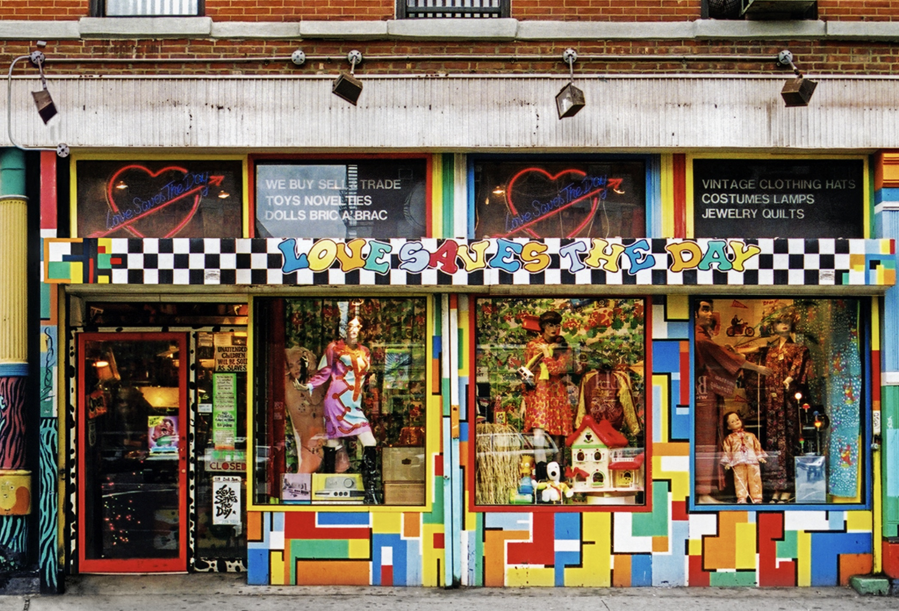
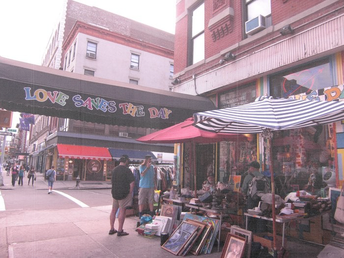
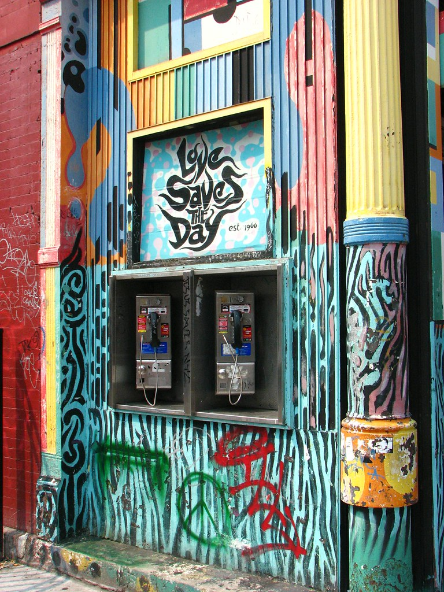
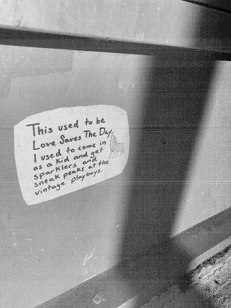

1966-2008
LOVE SAVES THE DAY
119 SECOND AVE.
NEW YORK, NY

JAMES AND KARLA MURRAY,STORE FRONT: THE DISAPPEARING FACE OF NEW YORK
LOVE SAVES THE DAY OPENED IN 1966, IN A TIME KNOWN BY SOME AS THE AGE OF AQUARIUS, IN A MANHATTAN NEIGHBORHOOD THAT WAS A HIPPIE HAVEN.
The store was originally located down the street on East 7th Street and I moved to this Second Avenue location in 1983. An employee painted the sign and the storefront with a colorful pattern in 1990.

ARIELA B, YELP
PARUL PATEL, 2020
"It endured as a psychedelic oasis even as the hippies disappeared and the neighborhood, the East Village, was transformed into a pricier and less scruffy place by the real estate boom that washed across many parts of New York City.""

HIROKO MASUIKE, "END COMES FOR OUTPOST OF EAST VILLAGE COUNTERCULTURE", THE NEW YORK TIMES
TO SAY THE STORE WAS CLUTTERED WOULD BE AN UNDERSTATEMENT.
The store displays retro toys and objects evoking nostalgia across generations. There are bellbottoms and platform shoes from the ’60s, Fraggle Rock toys and Smurfs that came free with McDonald’s children’s meals, old Playboy magazines, metal lunch boxes and copies of Life magazine.
STORE CLOSINGS OFTEN ARE TIED TO RISING RENTS IN MANHATTAN.
But that is only one reason Love Saves the Day is shutting its doors. Mr. Herson said the death in August of his wife, Leslie Herson, 65, who started the store, left it without its soul. “It’s hard to carry on without her,” said Mr. Herson, who will continue running a second store with the same name in New Hope, Pa.

JOHN BLOUGH,FLICKR


COOL IN YOUR CODE, "LOVE SAVES THE DAY"
PARUL PATEL, 2020
“Her store was a destination before vintage clothing became a staple of the hipster wardrobe. The rent on the original store was $95 a month; When it closed it is $11,000.”
This East Village neighborhood has changed so much over the years and is not really a neighborhood anymore as far as the people are concerned. There used to be lots of mom and pop stores in the area and neighborhood people would shop in them but most of the shops have been forced to close because rents have gotten really high. .”

A MEMORY OF LOVE SAVES THE DAY, EV GRIEVE
PARUL PATEL, 2020